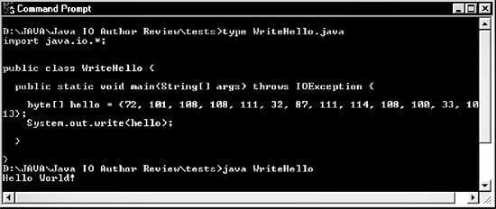

Chapter 1.7 控制台(The Console: System.out, System.in, and System.err)
控制台是System.out和System.err的默认输出位置,也是System.in的默认输入位置.
在大多数平台上,控制台都是一个Java程序启示的命令行环境,可能是xterm或者是个如图1-1中
的DOS提示符.控制台这个词有些用词不当,在Unix中,系统的控制台指的是一个非常具体的命令
行外壳程序(command-line shell),而不是指所有的命令行shell.
图1-1 Windows中的DOS控制台

很多常见的对I/O的误解,是因为多数程序员一开始是通过控制台接触I/O.控制台在在快
速解决问题时很好用,在教材中的小示例中也很常见,而我在这本书中也会用它做示例,但是作
为输入源和输出目标来讲,控制台却很不常用,好的Java程序应该避免它.与其他你要读写的东
西相比,控制台的表现差不多,但是并不完全.虽然控制台在作示例时就想上图一样很方便好用,
但是他们的用户界面非常糟糕,在当今的程序中几乎有一席之地.有良好设计的GUI程序会让用
户更舒服.此外,控制台在跨平台时并不可靠.很多小型设备如掌上电脑和手机都木有控制台.
浏览器运行applet有时会提供一个用于输出的控制台.但是它默认是隐藏的,一般也不能用作
输入,也并非在所有平台上的所有浏览器都可用.
1.7.1 System.out
System.out是大多数程序员遇到的OutputStream类的第一个实例.实际上,很多时候在学
生还不知道什么是类或者什么是输出流的时候就已经知道它了.具体的说,System.out是
java.lang.System类的静态成员out.是java.io.OutputStream子类java.io.PrintStream的
实例.
System.out相当于Unix或者C语言中的stdout.一般来说,被发送到System.out的输出会在
控制台中显示.作为基本规则,控制台将System.out发送给它的整数字节数据转换成ASCII或
Latin-1文本.所以如下的代码会在控制台上写出"Hello World!":
byte[] hello = {72,101,108,108,111,32,87,111,114,108,100,33,10,13};
System.out.write(hello);
1.7.2 System.err
Unix和C的程序员对stderr很熟悉,它通常被用在错误信息中.stderr是与stout不同的
文件指针,但是很多时候是一个东西.基本上来讲,不论数据是什么,stderr和stdout都将数据发
送到控制台,但是,stdout和stderr可以被重定向到不同的位置.比如说,输出可以被重定向到一
个文件中,而错误信息可以继续在控制台显示.
System.err是Java版的stderr.与System.out一样,System.err是java.io.OutputStream
子类java.io.PrintStream的实例.System.err大多用在try/catch语句块中,如下:
try {
// Do something that may throw an exception.
}
catch (Exception ex) {
System.err.println(ex);
}
只是完成程序并不需要用很多System.err,但是这在你调试的时候很有用.
*类库永远都不应该用System.err打印任何东西.原则上说,类库不应该和用户有交流,除非有
特殊目的.作为取代,类库应该通过抛出异常或调用某种异常处理对象中的回调函数来及时通知客户端
他们遇到的任何问题.是的!Xerces!我在说你!(Xerces XML parser,内置在Java5中,他们有个非常讨厌
的习惯,即使是非致命性错误也会用System.err打印)
1.7.3 System.in
System.in是连接到控制台的输入流,就像System.out是连接到控制台的输出流一样.在Unix或C
中,System.in对应stdin并且也可以重定向到一个外壳程序.System.in是java.lang.System类的静态成
员in.是java.io.InputStream的实例,至少文档中是这么说的.
忘了那些过时的文档吧,System.in实际上是一个java.io.BufferedInputStream.
BufferedInputStream没有定义任何新方法;它只是重新了java.io.InputStream的方法.带缓存的输入
流把大块数据读进一个缓存,然后将其包装称请求的尺寸.这比每次读取一个字符要有效率的多.否则,
数据对程序员来说就是完全透明的了.
这样做的主要原因是:在用户向System.in中输入字节(byte)的时候,字节并不可在程序中使用.
相反的,每次只向程序输入一行.这可以让用户向控制台中多次输入退格键来修正错误.Java不允许你
将控制台设置成每个字符(包括退格和删除)在输入后都马上可用的"raw"模式.
用户想控制台输入时使用平台的默认字符集,一般是ASCII或其超集.数据在读取时会被转换成
整数字节(numeric bytes).例如,如果用户输入了"Hello World!"并回车,程序会从System.in中按以下
顺序读出字节:
72,101,108,108,111,32,87,111,114,108,100,33,10,13
很多运行在命令行并从System.in中读取输入的程序需要你输入一个"流结尾"的字符,也叫做"文
件结尾"或者EOF字符来正常的结束程序.至于怎么输入这个字符,取决于平台.在Unix和Mac系统中,
Ctrl-D一般代表流的结尾.在Windows中,则是Ctrl-Z.有些时候,可能需要在单独的一行中输入这些字符
也就是,你需要输入Enter/Ctrl-Z或Enter/Ctrl-D让Java知道这是流的结尾.
1.7.4 重定向System.out,System.in和System.err
在外壳程序中,你通常会重定向stdout,stdin,或者stderr.例如,指定Java程序
OptimumBattingOrder的输出到文件yankees06.out并从yankees06.tab读取输入,你可以用以下代码:
% java OptimumBattingOrder < yankees06.tab > yankees06.out
在DOS shell中的重定向也是一样的.
有些时候在运行中的程序内部重定向System.out,System.in,和System.err会更方便.在
java.lang.System中如下的三个静态方法就可以做到:
public static void setIn(InputStream in)
public static void setOut(PrintStream out)
public static void setErr(PrintStream err)
例如,指定System.out的数据发送到文件yankees99.out中,并指定System.in从yankees99.tab
中读取数据,可以使用如下代码:
System.setIn(new FileInputStream("yankees99.tab"));
System.setOut(new PrintStream(new FileOutputStream("yankees99.out")));
1.7.5 Java6中的控制台类(The Console Class // Java 6)
在构建Java6时,Sun公司终于对狙击Python和Ruby社区中对与Java读取控制台输入有多麻烦的
抱怨感到疲倦了.在大多数脚本语言中,这只需要一行代码,不过与Java中传统方式相比这得到了一些
改善.
*与其他语言相比,在Java中读取控制台输入要简单的多,因为在2006年除了大学计算机课程外,
没人会需要这么做.真正的应用程序使用GUI或者网络作为用户界面,而不是控制台,而Java移植专注于
解决真正的问题,而不是课本上的小示例.
Java6增加了新的java.lang.Console类,提供了一些便利的输入和输出方法.这个类是单例类.
他永远不会有超过一个实例,并总是适用于和System.in,System.out,和System.err指向的外壳程序.
你可以用过静态方法System.console()来查找它的实例:
Console theConsole = System.console();
在一些没有控制台的环境中,如手机或者浏览器中运行此方法,会返回null;
你可以用很多方式来使用这个类.最重要的是,有一个很简单的readLine()方法,可以从控制台
中返回单独的一行文字,不包括换行符:
public String readLine() throws IOError
这个方法会在流结束的时候返回null.并且会在发生任何I/O错误的时候抛出IOError.(再一次的,
这是个设计错误,我还在劝说Sun公司在最终发行版前将其修复.这个方法应该和其他正常的方法一样在
出错时抛出一个IOException)
你可以选择在读取一行之前提供一个格式化过的提示字符(chapter1.Test1_7_5.promptTest):
public String readLine(String prompt, Object... formatting);
提示字符串的解析与printf()方法中的一样而参数要放在它的右面.这些东西做的只是格式化
提示字符!这与scanf()方法不同.返回值与无参数的readLine()方法是一样的.
Console还体统了两个readPassword()方法:
public char[] readPassword()
public char[] readPassword(String prompt, Object... formatting)
与readLine()不同,这些方法不会显示输入的内容.还要提醒的是他们返回一个char数组,而不是
一个String.当你结束输入的时候,你可以把这些字符全覆盖成0,已使这些密码在用过之后就从内存中
消失.这种机制限制了密码暴露于内存扫描器或由于虚拟内存而存储在硬盘上的可能性.
对于输出,Console提供了两个方法,printf()和format()
public Console format(String format, Object... arguments)
public Console printf(String format, Object... arguments)
这两个方法没有不同之处,他们是同义词①.例如,如下代码只使用printf()打印出三列的表格,
内容为从0-360度角的角度,弧度和梯度(百分度).每个数字为5位宽,小数点后保留一位:
Console console = System.console( );
for (double degrees = 0.0; degrees < 360.0; degrees++) {
double radians = Math.PI * degrees / 180.0;
double grads = 400 * degrees / 360;
console.printf("%5.1f %5.1f %5.1f\n", degrees, radians, grads);
}
这里是输出结果最开始的一段:
0.0 0.0 0.0
1.0 0.0 1.1
2.0 0.0 2.2
3.0 0.1 3.3
...
在第七章我们会进一步探索printf()和他的格式化参数.
控制台通常在遇到换行符之前会缓存所有的输出.你可以用flush()方法在换行前强制将要写的
数据显示在屏幕上:
formatter.flush( );
formatter.close( );
最后,如果这些方法对你还不够用,你可以直接操作与控制台相关联的PrintWriter和Reader:
public PrintWriter writer( )
public Reader reader( )
在第二十章我们会讨论这两个类.
示例1-1是一个简单的程序,用Console类来解决一个典型的家庭作业:让用户输入一个1-10之间
的整数.并打印出从1到这个数中所有数字的平方.在保留程序原意同时,我至少在这段代码中留下了三
个学生会出的典型的bug.找到并改正这些错误是留给读者的家庭作业:
示例1-1
import java.io.*;
class Homework {
public static void main(String[] args) {
Console console = System.console( );
String input = console.readLine(
"Please enter a number between 1 and 10: ");
int max = Integer.parseInt(input);
for (int i = 1; i < max; i++) {
console.printf("%d\n", i*i);
}
}
}
译者注:
①实际上在Java6中 printf的实现只是直接调用了format方法,Java6源码:
public Console printf(String format, Object ... args) {
return format(format, args);
}